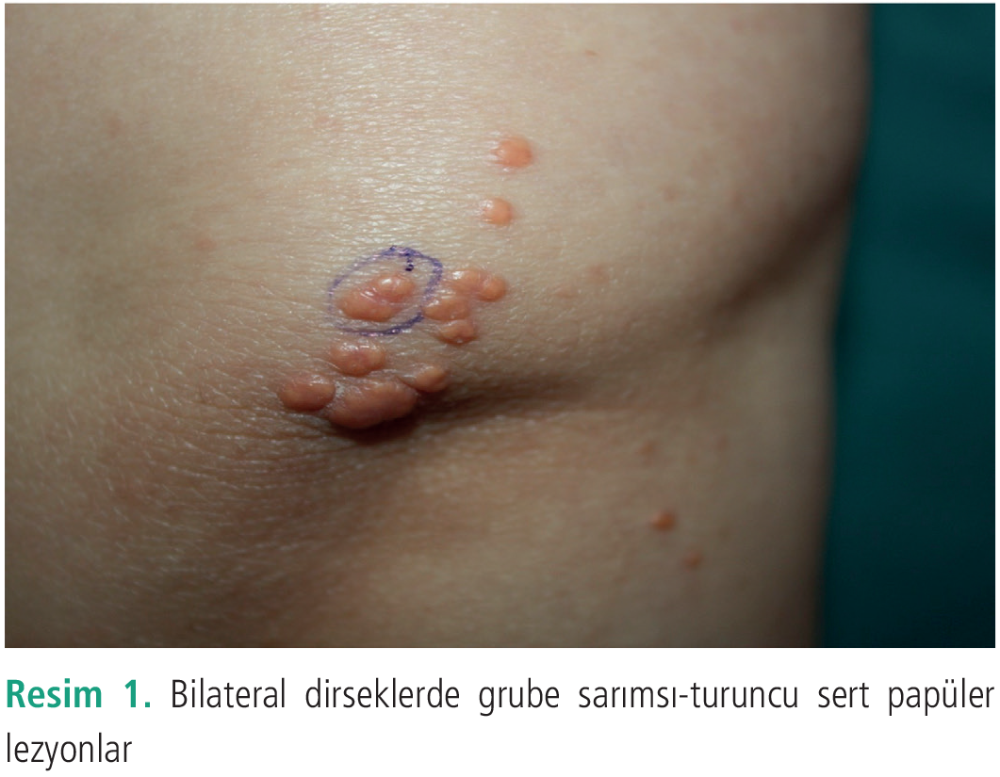
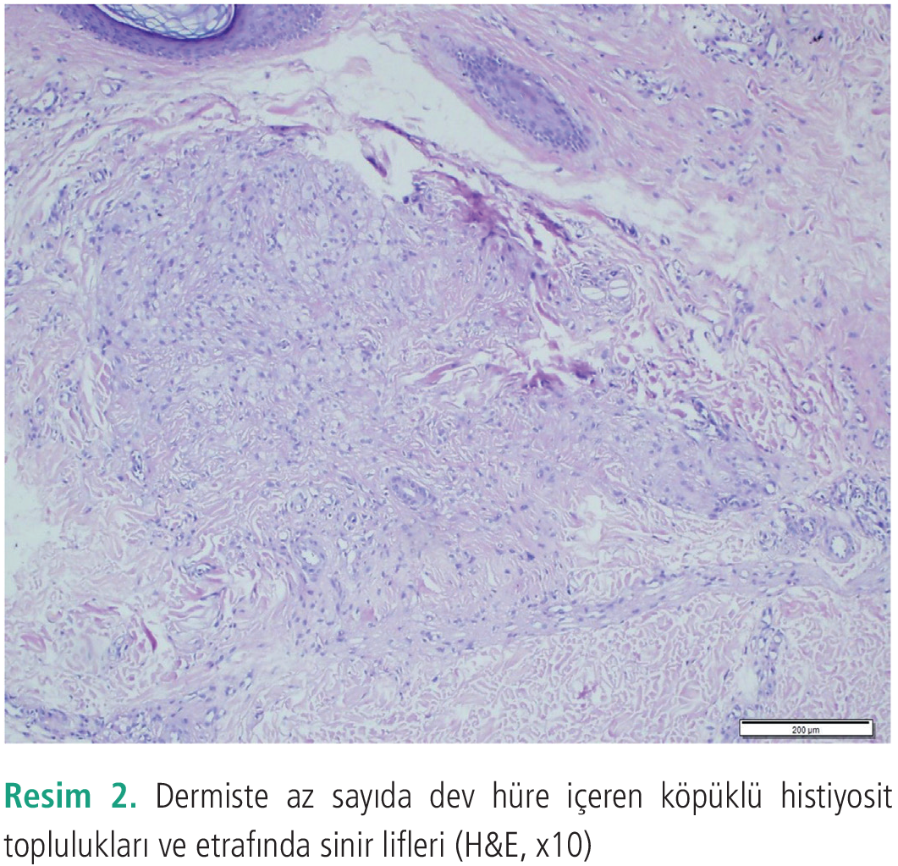
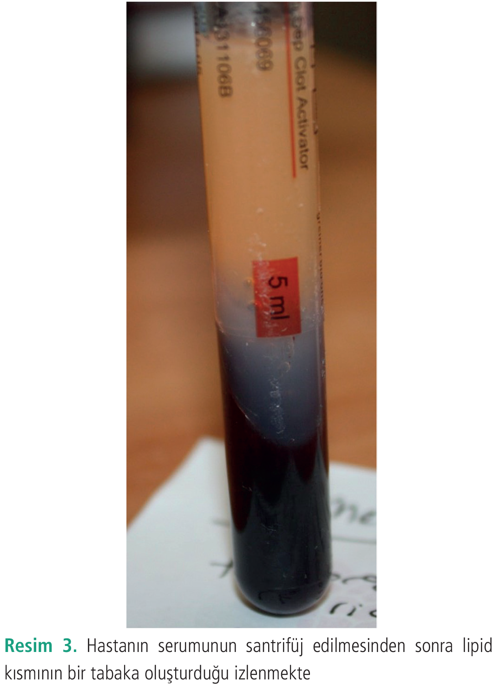

Olgu Sunumu
Tüberöz Ksantom: Olgu Sunumu
1 İstanbul Medeniyet Üniversitesi Tıp Fakültesi, Deri ve Zührevi Hastalıkları Anabilim Dalı, İstanbul, Türkiye
2 İstanbul Medeniyet Üniversitesi Tıp Fakültesi, İç Hastalıkları Anabilim Dalı, İstanbul, Türkiye
3 İstanbul Medeniyet Üniversitesi Tıp Fakültesi, Patoloji Anabilim Dalı, İstanbul, Türkiye
Anahtar Kelimeler: Depo hastalıklarıhiperlipidemihistiyositozksantomtendon
Keywords: Storage disorderhyperlipidemiahistiocytosisxanthomatendon
Geliş: 12.11.2020Kabul: 18.02.2021Yayın: 16.03.2021
s. 36-38
Özet
ÖZET
Ksantomlar, sıklıkla dermis veya tendonlarda lipid yüklü histiyosit birikiminin izlendiği klinik olarak sarımsı sert papül ve plaklarla karakterize lipid metabolizma hastalıklarıdır. Klinik özelliklerine göre ksantelezma, erüptif, tendinöz, tüberöz, palmar normolipidemik difüz yassı tipler olmak üzere alt tipleri bulunur ve farklı lipoprotein alt tipleri farklı tip ksantomları oluşturur. Ksantomların tipi hiperlipoproteinlerin tipi konusunda, eşlik edebilen endokrinopatiler ve genetik hastalıklar hakkında önemli ipuçları verebilir. Ksantomlar, özellikle koroner arter hastalığı gibi yaşamı tehdit edebilecek hastalıkların erken tanı ve tedavi açısından klinisyenler için bir klinik ipucu olarak değerlendirilmelidir.
Tam Metin
Giriş
Tüberoz ksantom, ksantomlar içerisinde nadir görülen ve genellikle bilateral diz ve dirsek gibi eklem üzerine yerleşim gösteren lezyonlardır. Klinik bulgular sistemik hastalıklar içerisinde ailesel dislipidemiler, primer biliyer siroz, biliyer atrezi ve hipotiroidi gibi hastalıklara eşlik edebilmektedir. Tedavide altta yatan hastalığa ve kan lipid düzeyini düşürmeye yönelik tedaviler verilmektedir (1).
Olgu Sunumu
Otuz dokuz yaşında sarkoidoz tanılı bayan hasta 5-6 senedir üst göz kapaklarında var olan sert sarımsı lezyonlar nedeniyle polikliniğimize başvurdu. Hastanın dermatolojik muayenesinde göz kapağı yerleşimli lezyonlara eşlik eden bilateral dirsekler ve sol diz yerleşimli grube sarımsı-turuncu sert papüler lezyonlar izlendi (Resim 1). Hastadan fotoğraf ve biyopsi işlemi için bilgilendirilmiş onam formu alındıktan sonra dirsek lezyonlarından 4 mm çapta punch biyopsi yapıldı. Alınan biyopside dermiste az sayıda dev hüre içeren köpüklü histiyosit toplulukları ve etrafında sinir lifleri izlendi (Resim 2). Hastanın yapılan laboratuvar incelemelerinde kolesterol düzeyi: 365 mg/dL trigliserid düzeyi: 456 mg/dL, yüksek yoğunluklu lipoprotein: 36 mg/dL saptandı. Serum örneğinin santrifüjü sonrasında lipidlerin yoğun konsantrasyonu dikkat çekmekteydi (Resim 3). Düşük yoğunluklu lipoprotein (LDL) kolesterol düzeyi saptanamadı. Serum yüksek lipid düzeyleri izlenen hastamız klinik ve histopatolojik bulguları ile ksantom ile uyumlu olarak değerlendirilerek antihiperlidemik tedavi açısından iç hastalıkları-endokrinoloji bölümüne yönlendirildi.
Tartışma
Ksantomlar çeşitli lipidlerin, deride ve tendonlarda anormal olarak depolanmasıyla oluşan, klinikte tipik olarak sarı-turuncu renkte, makül, papül, plak ve nodüllerle karakterize lezyonlardır. Sıklıkla altta yatan bir primer veya sekonder lipid metabolizma bozukluğunun belirtisi olarak ortaya çıkarlar ancak nadiren normolipidemik kişilerde de görülebilirler (2). Klinik görünüm ve yerleşim yeri esas alınarak yapılan sınıflandırılmada ksantelezma, erüptif, tendinöz, tüberoz, palmar normolipemik diffüz yassı ksantomlar şeklinde farklı gruplara ayrılmıştır (1,2). Histopatolojik incelemede sitoplazmalarında lipid biriken makrofajlardan oluşan köpüksü hücrelerin görülmesi ksantom tanısında ana bulgudur (1).
Farklı tip lipoproteinlerin farklı tip ksantomları oluşturması nedeniyle ksantomların tipi hiperlipoproteinlerin tipi konusunda önemli ipuçları verebilir. Ksantomların tanınması altta yatan sistemik hastalığın tanınması ve tedavisi açısından kritik öneme sahiptir. Lezyonlar LDL reseptör genindeki mutasyona bağlı olarak kalıtsal olarak görülebileceği gibi çeşitli primer genetik hastalıklar, diyabet, obstrüktif karaciğer hastalıkları, tiroid hastalıkları, böbrek hastalıkları ve pankreatit gibi sekonder durumlar ksantom oluşumuyla sonlanan hiperlipidemiye sebep olabilmektedir (3-5). Ksantom oluşumunun erken döneminde lipid dağılımındaki bozukluk düzeltilirse, ksantomlar kendini sınırlayıp gerileyebilirken, geç dönemlerde kalıcı olabilirler (3,4).
Tüberöz ksantomlar sıklıkla diz, dirsek gibi eklemler üzerine yerleşen, düz veya yüzeyden hafif kabarık, gruplaşma eğilimi gösteren, sarımsı, ağrısız, nodüllerle karakterize lezyonlardır. Lezyonlar genellikle yavaş gelişirler ve zamanla birleşerek, kalıcı olma eğilimi gösterirler (1). Lezyonlar genellikle el ve ayak parmak eklemleri üzerinde, daha az sıklıkta yüz, göz kapakları, aksilla ve inguinal kıvrım veya kalça yerleşimli görülebilirler. Yeni lezyonlar genellikle sarı renkli ve eritemli iken, eski lezyonlar fibrotik hale gelerek rengini kaybederler. Ailesel hiperkolesterolemi, ailesel disbetalipoproteinemi gibi kolesterol seviyelerinin arttığı primer hiperlipidemilere eşlik edebileceği gibi nadiren normolipidemik bireylerde de görülebilirler (5-7). Tüberöz ksantomda altta yatan hastalığın tedavisi ve kan lipid düzeyini düşürmek tedavide ana hedeftir (4). Literatürde uzun süreli tedavi edilmeyen bir olguda tüberöz ksantom lezyonları üzerinden yassı hücreli karsinom gelişimi bildirilmiştir (8). Bunun yanı sıra ksantomların lenfoproliferatif bozukluklarla da ilişkili olabileceği akılda tutulmalıdır. Ksantomlar genellikle sistemik hiperlipidemilerin göstergesi olup nadir formları bulunmaktadır. Bu formlarda özellikle sistemik komplikasyonların erken dönemde önlenmesi amacıyla ayrıntılı bir araştırma yapılmalıdır.



Kaynaklar
1.Massengale WT, Nesbitt LT. Xanthomas. In: Bolognia JL, Jorizzo JL, Rapini RP, eds. Dermatology. 2nd ed. New York: Mosby; 2008: 1411-1419.
2.Serel S, Emiroğlu M, Ersöz S. Xanthomas: is excision really necessary? Ankara Üniversitesi Tıp Fakültesi Mecmuası 2003; 56: 45-50.
3.Parker F. Xanthomas and hyperlipidemias. J Am Acad Dermatol 1985; 13: 1-30.
4.James WD, Berger TG, Elston DM. Errors in metabolism. Andrews’ diseases of the skin. 2006: 530-536.
5.Kong MX, Zhang Q, Cao L, Zhao C, Ru GQ, Bi Q. Familial hypercholesterolaemia with tuberous and tendinous xanthomas: case report and mutation analysis. Clin Exp Dermatol 2015; 40: 765-769.
6.Rachadi H, Ramli I, Touzani A, Hassam B, Ismaili N. Xanthomes tubéreux de présentation spectaculaire révélant une hypercholestérolémie familiale homozygote [Spectacular presentation of tuberous xanthomas revealing a homozygous familial hypercholesterolemia]. Presse Med 2016; 45: 269-271.
7.Akpinar TS, Kose M, Emet S. A rare manifestation of tuberous xanthomas. J Gen Intern Med 2015; 30: 691.
8.Sancheti K, Das A, Podder I, Mohanty S, Gharami RC, Jash PK. Squamous cell carcinoma developing in a long-standing case of tuberous xanthoma: an incident unreported hitherto. Indian Dermatol Online J 2015; 6: S5-S8.